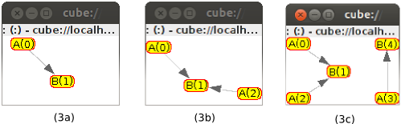

Project Links
Catalog
Other Links

Self-Connecting Components
In this tutorial, we will show you how to specify constraints and goals on how the components should be connected.
We will just manipulate Cube Abstract Components. All what is applied to these components can be projected to real technology-specific components (using Cube Extensions).
- Where to find and test the examples
- The initial configuration
- Test case 1
- Test case 2
- Test case 3
- Test case 4
Where to find and test the examples
From the downloaded distribution of Cube, in the following directory:
demo/getting_started/connecting_components
The initial configuration
In this tutorial, we will use only one Node (mynode). The Cube Agent controling this node is configured with two extensions: the core extension and the internal monitoring extension. The first one contains the core model types (components, nodes and scopes) and the core constraints and their resolvers, while the second one allows us to see, in graphical interface, the structure of the application's part (components).
have a look to the agent config file located here:
demo/getting_started/connecting_components/mynode/load/cube.agent
<cube>
<agent>
<host value="localhost"/>
<port value="38000"/>
<archetypeUrl value="file:../demo1.arch"/>
<extensions>
<extension id="fr.liglab.adele.cube.core"/>
<extension id="fr.liglab.adele.cube.monitoring"/>
</extensions>
</agent>
</cube>In this tutorial, we will change the archetypeUrl each time we want to test some thing different. This requires to restart the node. (It is already envisaged to have the dynamic upgrade of archetypes, but not yet implemented!)
Test case 1
The Archetype
First, we will test the following archetype definition (demo1.arch):
<cube xmlns:core="fr.liglab.adele.cube.core">
<archetype id="net.debbabi.cube.demo.connect" name="Connecting Components Tutorial 1" version="1.0">
<types>
<core:component id="A"/>
<core:component id="B"/>
</types>
<constraints>
<variables>
<var id="va" type="A"/>
<var id="vb" type="B"/>
</variables>
<core:connect v1="va" v2="vb"/>
</constraints>
</archetype>
</cube>We have specified two component types A and B. All the instances of component type A are constrained with the connect constraint with instances of component type B. That is, each instance A should be connected to another instance B (and not vice versa!).
Testing
Launch the cube agent from:
demo/getting_started/connecting_components/mynode
Within Linux shell, type the following command. (Other Operating systems)
$ sh ./init.sh
_______
/| |
| | CUBE |...Starting the CUBE Platform
| |______| 1.2.0-SNAPSHOT
|/______/
____________________________
Welcome to Apache Felix Gogo
[INFO] ... starting the CubeAgent: cube://localhost:38000
g! After the startup of the node, you will have the internal monitoring GUI opened.
Create a component instance of type A (using newi command), and then show the Runtime Model content (using rm command).
g! newi A
g! rm
--------------------------------------------------------------------------
- cube://localhost:38000/objects/0 (fr.liglab.adele.cube.core.component:A) [UNRESOLVED]
localId: 0
Node: null
InComps:
OutComps:
--------------------------------------------------------------------------You notice that A is unresolved due to the non respect of the connect constraint. That is, A instance is created but when resolving it, it is not connected to any instance B.
Create a new instance B.
g! newi B
g! rm
--------------------------------------------------------------------------
- cube://localhost:38000/objects/1 (fr.liglab.adele.cube.core.component:B) [VALID]
localId: 1
Node: null
InComps:
OutComps:
- cube://localhost:38000/objects/0 (fr.liglab.adele.cube.core.component:A) [UNRESOLVED]
localId: 0
Node: null
InComps:
OutComps:
--------------------------------------------------------------------------The component instance B is created and is valid. This is true because no constraint was specified on B instances.
You notice that A is always unresolved despite the availability of the B instance (see the description of this issue on the Cube project).
Now, if you create a new instance of type A, it will always remains unresolved, this is because we have not mentionned in the archetype how to find this instance of type B which A is connected to. This should be specified manually on the archetype, but in future versions we envisage to do that automatically.
Test case 2
The Archetype
We update the first archetype by adding constraints allowing as to find the instance of type B connected to the instance of type A when created (demo2.arch):
<cube xmlns:core="fr.liglab.adele.cube.core">
<archetype id="net.debbabi.cube.demo.connect" name="Connecting Components Tutorial 2" version="1.0">
<types>
<core:component id="A"/>
<core:component id="B"/>
</types>
<constraints>
<variables>
<var id="va" type="A"/>
<var id="vb" type="B"/>
</variables>
<core:connect v1="va" v2="vb"/>
<core:find-locally v="vb" priority="1"/>
<core:self-create-locally v="vb" priority="2"/>
</constraints>
</archetype>
</cube>The find-locally constraint help to find an instance for the specified variable by looking on the local Runtime Model Part. While the self-create-locally find an instance by creating it locally.
Notice that we have manullay put priorities between the two constraints find-locally and self-create-locally. The priority 1 is higher than the priority 2 and so on.
Testing
You should stop your execution node before starting this new manipulation (Ctrl + c). Then, update the cube agent local configuration file to point to demo2.arch archetype instead of demo1.arch, and start the node as was explained before and do the following tests:
Create a component instance of type A three successives times.
g! newi A
The following images represents the visual structure of the application (provided by the internal monitoring extension) after executing each of the newi A commands.

In the first time (2a), Cube has analysed the archetype demo2.arch and found that the newly created instance of type A should be connected to an instance of type B. It tries to find this instance locally (using the find-locally constraints at first because it has a higher priority), and as no instance of type B already exists, it tries the second constraint self-create-locally, this last one found an instance for B (create it locally). And finaly the last constraint in-component is true in this situation.
In the second (2b) and the third (2c) times, the hight priority constraint find-locally is satisfied and so any new instance of component A is connected to this instance (B(1)).
Test case 3
The Archetype
Now, we update the last archetype definition by adding constraint on the B instances. This constraints (in-components) will ensure that any instance of component B should have at max a given number of input component instances. (see demo3.arch):
<cube xmlns:core="fr.liglab.adele.cube.core">
<archetype id="net.debbabi.cube.demo.connect" name="Connecting Components Tutorial 3" version="1.0">
<types>
<core:component id="A"/>
<core:component id="B"/>
</types>
<constraints>
<variables>
<var id="va" type="A"/>
<var id="vb" type="B"/>
</variables>
<core:connect v1="va" v2="vb"/>
<core:find-locally v="vb" priority="1"/>
<core:self-create-locally v="vb" priority="2"/>
<core:in-components v="vb" max="2"/>
</constraints>
</archetype>
</cube>That is, when creating a component instance of type A, this last one should be connected to a component instance of type B which should exists locally and already have less that 2 input component instances. If not, create a new instance of type B.
Testing
Restart the execution node (Ctrl-C) and then update again the cube agent local configuration file to point to this new archetype file demo3.arch.
When starting the node, try the same sequence of commands as in the test case 2. That is create component instances of type A three successives times.
Here the different outputs for each time.
The differnce regarding the test case 2, is after the creating of the third instance of component A. Whith this new archetype, even that cube finds the already created instance of B, if this third instance of A is connected to it, the constraint in-components will not be satisfied. Hence, cube resolver tries with the next constraint self-create-locally to find the instance B, and this is why this third instance of A is connected to a new instance of B.
Test case 4
The Archetype
Finally, we will test the creation of a chain of components by just creating the first one (see demo4.arch).
<cube xmlns:core="fr.liglab.adele.cube.core">
<archetype id="net.debbabi.cube.demo.connect" name="Connecting Components Tutorial 4" version="1.0">
<types>
<core:component id="A"/>
<core:component id="B"/>
<core:component id="C"/>
<core:component id="D"/>
</types>
<constraints>
<variables>
<var id="va" type="A"/>
<var id="vb" type="B"/>
<var id="vc" type="C"/>
<var id="vd" type="D"/>
</variables>
<core:connect v1="va" v2="vb"/>
<core:connect v1="vb" v2="vc"/>
<core:connect v1="vc" v2="vd"/>
<core:self-create-locally v="vb"/>
<core:self-create-locally v="vc"/>
<core:self-create-locally v="vd"/>
</constraints>
</archetype>
</cube>when creating a component instance of type A, all the other components will be instantiated and connected as was specified on the archetype.
Testing
Restart the execution node (Ctrl-C) and then update again the cube agent local configuration file to point to this new archetype file demo4.arch.
When starting the node, just create an instances of type A and see what hapens.
g! newi A
Each instance A will create a chain of the other connected instances (B, C and D).